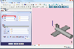
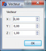

Contents
Description
Command for modifying Placement. These options relate only to the position and orientation of the object in space, they do not affect other attributes of the shape. The placement is stored internally as a position, and a rotation (rotation axis and angle transformed into a quaternion [1]). While there are several methods to specify a rotation, for instance with a rotation center, this is only used to affect the rotation computation and is not stored for later operations. Similarly, if a rotation axis of (1,1,1) is specified, it may be normalized when stored in the quaternion and appear as (0.58, 0.58, 0.58) when browsing the object later.
Usage
The function Placement can be accessed in several ways:

- or, in the window Combo View → Properties → Data → Placement → ...,

- or by the menu Edit → Placement....
Enable Placement in Combo View
- Click a shape to select it.
- Click Placement (the title, not the little arrow), and a button with three dots appears:

- click on this button, and the Placement Dialog is displayed:
Options
Translation:
- TASKS X  Moves the coordinate system of the object in the X direction in relation to the axis coordinates of origin 0, 0, 0.
- TASKS Y
 Moves the coordinate system of the object in the Y direction in relation to the axis coordinates of origin 0, 0, 0.
Moves the coordinate system of the object in the Y direction in relation to the axis coordinates of origin 0, 0, 0. - TASKS Z
 Moves the coordinate system of the object in the Z direction in relation to the axis coordinates of origin 0, 0, 0.
Moves the coordinate system of the object in the Z direction in relation to the axis coordinates of origin 0, 0, 0.


{kind=link}
{kind=link}
Center
- TASKS X: Move the center of rotation in the direction X, from the coordinates of the selected object. (default: 0,0,0).
- TASKS Y: Move the center of rotation in the direction Y from the coordinates of the selected object. (default: 0,0,0).
- TASKS Z: Move the center of rotation in the direction Z, from the coordinates of the selected object. (default: 0,0,0).
- TASKS User Defined ... : Allows you to change the three axes ( X, Y, Z) in a single operation .
{kind=link}
Rotation
To adjust our rotation parameters we have two methods available.
- First option. Select Rotation axis with angle (Default).
- TASKS Axis: X: The rotation will be on the X axis.
- TASKS Axis: Y: The rotation will be on the Y axis.
- TASKS Axis: Z: The rotation will be on the Z axis. (Default axis).
- TASKS Angle: Angle of rotation in degrees from -360.00 ° to 360.00 °. (Default: 0.00°).
{kind=link}
- Second option. Select Euler Angles
 .
.
This option may be easier to work with, however, even in this mode, there are important things to remember: Positive rotations are in the clockwise direction, looking out from the origin along a positive axis. Or to put it differently, the rotations are positive in the counterclockwise direction, looking in to the origin along a positive axis.
Yaw, pitch and roll refer to the attitude of an object in 3D space. These terms are commonly used in aviation. The angles are the Tait-Bryan angles. If you want more information, try Euler angles.
{kind=link}

- TASKS yaw axis Yaw is the rotation about the Z axis, that is to say a rotation from left to right. (The yaw angle is the Psi ψ). Value -360.00 ° to 360, 00 ° (Def, 0.00 °).

- TASKS pitch axis Pitch is rotation about the Y axis, that is to say nose-up and nose-down. (The Pitch angle is the Phi φ). Value -360.00 ° to 360, 00 ° (Default, 0.00 °).

- TASKS roll axis Roll is rotation about the X axis, that is to say wing up and down. (The Roll angle is the Thêta θ). Value -360.00 ° to 360, 00 ° (Default, 0.00 °).
- TASKS Apply incremental changes to the placement of the object: Once selected, this option virtually sets all parameters to zero, to allow you to enter your values without having to calculate with the original parameters of the form. Once you have confirmed with OK, the entered values will be added to the values on the form.
- The Reset returns all values to 0,0,0.
Links and Example
A practical example of using this command is in the tutorial Aeroplane.
Other explanation on Placement